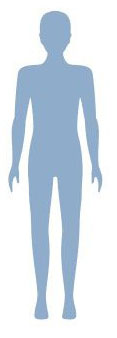

<!DOCTYPE html>
<html lang="ko">
    <head>
        <meta charset="UTF-8">
        <title>BMI</title>
        
    </head>
    <body>
        <script>
        let userHeight = prompt("키는? (ex)150cm --> 1.5");
        let userWeight = prompt("체중을 입력하세요.");
        let BMI =  (userWeight / (userHeight * userHeight)).toFixed(2);//키는 m

        // if (BMI > 35){
        //     alert("당신의 BMI지수는 "+BMI+"로서 고도비만입니다.");
        //     document.write("당신의 BMI지수는 "+BMI+"로서 고도비만입니다.");
        //     document.write("<br>"); // 줄바꿈
        //     document.write("");
        //     document.write("");
        //     document.write("");
        // }
        // else if (BMI > 30){
        //     alert("당신의 BMI지수는 "+BMI+"로서 중정도입니다.");
        //     document.write("당신의 BMI지수는 "+BMI+"로서 중정도입니다.");
        //     document.write("<br>"); // 줄바꿈
        //     document.write("");
        //     document.write("");
        //     document.write("");
        // }
        // else if (BMI > 25){
        //     alert("당신의 BMI지수는 "+BMI+"로서 비만 경도입니다.");
        //     document.write("당신의 BMI지수는 "+BMI+"로서 비만 경도입니다.");
        //     document.write("<br>"); // 줄바꿈
        //     document.write("");
        //     document.write("");
        //     document.write("");
        // }
        // else if (BMI > 23){
        //     alert("당신의 BMI지수는 "+BMI+"로서 과체중입니다.");
        //     document.write("당신의 BMI지수는 "+BMI+"로서 과체중입니다.");
        //     document.write("<br>"); // 줄바꿈
        //     document.write("");
        //     document.write("");
        //     document.write("");
        // }
        // else if (BMI > 18.5){
        //     alert("당신의 BMI지수는 "+BMI+"로서 정상체중입니다.");
        //     document.write("당신의 BMI지수는 "+BMI+"로서 정상체중입니다.");
        //     document.write("<br>"); // 줄바꿈
        //     document.write("");
        //     document.write("");
        //     document.write("");
        // }
        // else { //(BMI <= 18.5)
        //     alert("당신의 BMI지수는 "+BMI+"로서 저체중입니다.");
        //     document.write("당신의 BMI지수는 "+BMI+"로서 저체중입니다.");
        //     document.write("<br>"); // 줄바꿈
        //     document.write("");
        //     document.write("");
        //     document.write("");
        // }
 
        if (BMI > 35){
            str = ("고도비만");
            pic1='w5.jpg';
            pic2='35.jpg';
            pic3='m5.jpg';
        }
        else if (BMI > 30){
            str = ("중정도");
            pic1='w4.jpg';
            pic2='30.jpg';
            pic3='m4.jpg';
         }
        else if (BMI > 25){
            str = ("비만 경도");
            pic1='w3.jpg';
            pic2='25.jpg';
            pic3='m3.jpg';
         }
        else if (BMI > 23){
            str = ("과체중");
            pic1='w3.jpg';
            pic2='23.jpg';
            pic3='m3.jpg';
         }
        else if (BMI > 18.5){
            str = ("표준");
            pic1='w2.jpg';
            pic2='18_5.jpg';
            pic3='m2.jpg';
        }
        else {
            str = ("저체중");
            pic1='w1.jpg';
            pic2='18_0.jpg';
            pic3='m1.jpg';
        }
            alert("당신의 BMI지수는 "+BMI+"로서 "+ str +"입니다.");
            document.write("당신의 BMI지수는 "+BMI+"로서 "+str+"입니다.");
            document.write("<br>"); // 줄바꿈
            document.write("");
            document.write("");
            document.write("");
        </script>
    </body>
</html>